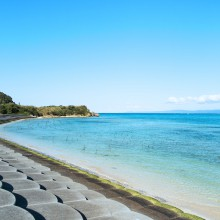
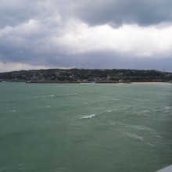
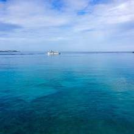

島の日々
沖縄では桜祭りが開催されています！
2016年02月01日
数日前に雪が降るほど寒かったとは想像できないぐらいに暖かい沖縄です。気温は21度、風がなければ春のような陽気を感じます。 春と言えば桜。沖縄北部では各地で桜祭り…
沖縄なのに寒すぎる。
2016年01月24日
沖縄、非常に寒いです。沖縄県国頭郡奥で5.8度を観測したようで、この気温は1月史上最低気温だそうです。沖縄本島には低温注意報が出ているようです。「低温注意報」初…
明けましておめでとうございます。
2016年01月01日
明けましておめでとうございます。古宇利島の護岸から眺める初日の出です。（今年は早起きできました。）古宇利島ではこの護岸や橋の上からたくさんの人が初日の出を見に来…
南風で暖かい一日。
2015年12月21日
こんにちは。沖縄も寒くなったなーと思ったらまた暖かくなりました。今日の最高気温は25度。半袖にビーチサンダルでオッケーです。ちなみに朝からシュノーケルしてきまし…
古宇利大橋から見る今日の夕日
2015年12月13日
今年は非常に暖かい日が続いています。沖縄といえども暖かすぎます。いったいいつ寒くなるのやら。まだまだ半袖で過ごせる気候です。 今日の写真は古宇利大橋で見る夕日と…